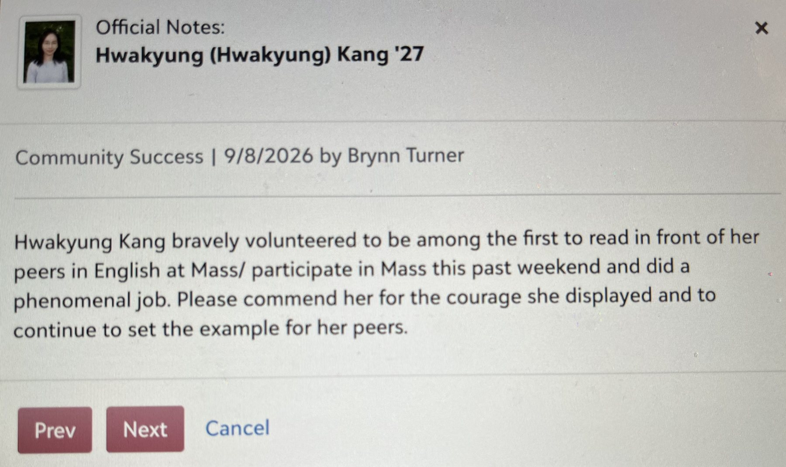

Mentorship & community
1. Peer Tutoring
11th grade–present
I have served as a peer tutor since 11th grade, primarily supporting students in mathematics and also helping with history and biology.
Why I like explaining something
My parents tell me that even before I turned one, I would become completely focused on something I found interesting and return to the same question again and again. In one picture book, I was fascinated by the railroad crossing gate that came down to stop cars and people while a train passed. I asked about it so often that my mother eventually hid the book for a while because she was tired of answering.
After I began speaking, I also had a habit of lying in bed and saying out loud the things I had seen or learned that day. Later, when I read history books, I liked gathering my parents and younger sibling and explaining world history in my own way. Now, my family has become used to my small world-history lectures.
I also rarely finish without asking, “What would you have done?” or “What do you think?” My family enjoys my history lectures, but these questions sometimes make them pause because they are not sure how to answer. I like hearing how the same event can look different when another person has to imagine being inside it.
I think this habit is one reason I enjoy presentations, discussions, and tutoring. Explaining something is not only a way to share what I know. It is also how I return to a question, organize it in my own words, and see what I still do not understand.
Before I came to the United States, I often thought of mathematics mainly as finding the correct answer. While studying AP Calculus BC, especially during my own study time, I began to see mathematics differently. Formulas were not only tools for getting an answer. They were part of a logical system, and I wanted to understand why each step worked.
This interest made me think more seriously about my next math course. I considered both linear algebra and statistics, and I decided to take statistics first because of my growing interest in cognitive science.
How I help someone get unstuck
When someone I tutor gets stuck, I first ask them to explain in their own words what they understand. I do not want to begin by giving them the answer. I try to help them find the exact place where their understanding becomes unclear.
After we find that point, I review the concept and begin with an easier problem before moving to similar questions. I often recommend Khan Academy lessons that I have used myself when a different explanation may help. Anyone I tutor can always ask me questions, and I try to answer them as soon as I can.
Teaching is also a way for me to learn. When I explain an idea, I often notice more about the principle behind it or find a question that I had not considered before. Explaining mathematics in Korean has also helped me think carefully about which words and examples make a concept clear.
The more I teach, the more I realize that helping someone understand is not only giving help. It is also a way of learning how people think.
2. International student leadership
GLO · 9th–12th grade | Residential Assistant · 12th grade
The things I had to learn alone
When I first came to boarding school from Korea, I did not know how to use the school portal, order textbooks online, or buy everyday things from American websites. There were many small things that other students seemed to know already. I tried to solve them alone, often through trial and error, because I did not yet understand what an RA was or feel comfortable approaching one with my questions.
Now, when I see younger boarders arriving with the same uncertainty, I remember that feeling. It is one reason I joined GLO and later applied to become a Residential Assistant.
Making space for others
For four years, I have participated in GLO’s weekly meetings and helped prepare and run International Day for the school community. I have introduced Korean language, traditional games such as jegichagi and gonggi, and dumpling-making to students from different backgrounds.
I like activities that give people something concrete to do together. A game or a shared food can make it easier for students who might not otherwise begin a conversation to join in.
As an RA, I do many small, practical things. I check in with younger boarders, help them get used to dorm routines, answer questions about school life, and help them find the right adult at school when they need more support. Students in my classes also sometimes come to my room to review coursework together.
I also pay attention to how people live together in the dorm. I speak gently but clearly when problems involve quiet hours, shared kitchens and bathrooms, personal belongings, or students who need rest.
I learned that telling someone to stop one behavior is not always enough. They may stop one thing but do another thing that causes the same problem. I want students to understand how their actions affect other people’s sleep, privacy, belongings, and sense of safety.
When that connection becomes clearer, I do not need to repeat the same correction as often. The goal is not simply to make students follow rules, but to help them understand their responsibility to other people in the community.
What I began to wonder
Living with students from many countries made me notice that the same situation can be understood in very different ways. A direct question, an unfamiliar food, a shared room, a school rule, or even the decision to ask for help can carry different meanings depending on a student’s language, previous school experiences, family expectations, and cultural habits.
I do not think these are fixed traits of any country or person. But this experience made me curious about why people notice, accept, or respond to the same thing differently. It was one of the first times I started to see cognitive science as more than what happens inside one person’s brain. The way we think is shaped by what we see and hear, but also by language, history, relationships, and the communities where we grow up.
Our residence halls have Instagram accounts for announcements, but there is no shared online space where international students can ask everyday questions. A food-delivery app, a local restaurant, or a ride to the airport may seem like a small matter, but when there is no clear place to ask, each one becomes something a new student has to solve alone.
I once hoped to create a small, school-approved online community where students could exchange practical information, coordinate airport carpools, share used items, and learn about one another’s cultures. I did not have enough time to build it, but the idea remains with me because it responds to the exact kind of uncertainty I experienced when I arrived.
3. School Chapel Lector
11th grade–present
All boarding students attend Sunday evening Mass, whether or not they are religious. Since 11th grade, I have volunteered as a lector and read the First Reading aloud for the boarding school community.

A role I chose
I have always liked presentations and speaking in front of people, so I enjoy having a role that asks me to step forward and read for others. I prepare the reading, practice unfamiliar names and words, and try to speak slowly enough for people to follow.
The chapel includes students with different religious backgrounds. Even though we may not all believe the same thing, we still share one quiet space and listen to the same words.
Questions I kept after Mass
After many Masses, I wrote short, dated reflections about one part of the reading that stayed with me. I often found myself asking why people believe, what gives them hope, and how ideas such as freedom, guilt, success, and love shape the way people live.
Growing up, I spent a lot of time with my maternal grandmother, who was Buddhist. Through her, I became familiar with Buddhist ideas before coming to a Catholic boarding school. This made me interested in how different traditions explain human responsibility and suffering. I do not think one tradition gives a simple answer to every question. But comparing them made me notice that people understand the same life experience through different histories, languages, and beliefs.
These reflections became a private record of questions I am still thinking about. They made me want to understand more carefully how people form meaning and interpret the world around them.